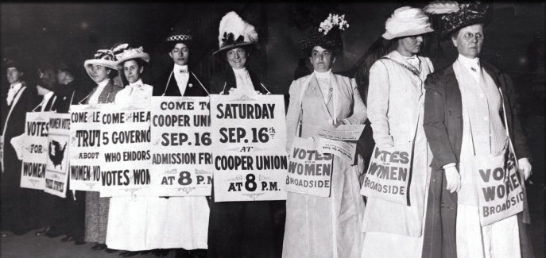
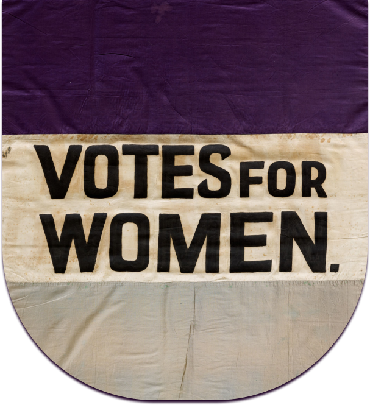

Mulheres que Marcaram a História
Das bruxas perseguidas na idade média, até as sufragistas que foram às ruas para conquistar o direito ao voto, é considerável separar os períodos importantes da humanidade das conquistas feministas que acompanharam o passar dos anos.
Ursulina de Jesus foi uma das mulheres acusadas de bruxaria no Brasil. Por seu marido, Sebastiano de Jesus, que descobriu qu nunca seria pai e a acusou de ter utilizado magia obscura em um ritual para provocar nele a infertilidade. Sebastiano levou sua amante, Cesária, como testemunha para depor contra a esposa no tribunal inquisidor, que caçava bruxas no Brasil.
Em frente ao júri, Cesária confirmou a versão de Sebastiano e Ursulina foi condenada à morte em praça pública pelos crimes de heresia e bruxaria. Em 1754, a mulher foi queimada viva em frente a uma plateia que clamava por justiça.
E essa é apenas uma das muitas histórias de mulheres que foram a fogueira com acusação de bruxaria por pessoas próximas, a violência contra a mulher e feminicídio a mil anos atrás não era algo tratado. As mulheres que abriram os olhos para o quanto isso era absurdo tiveram muitas lutas a partir disso, pare pra pensar á apenas 130 anos que garantimos direito ao voto, e no Brasil tem apenas 93 anos que temos isso. Uma coisa que devia ser direito de todos.
Não abrangendo muito mas contando sobre essas lutas, seguem momentos dos quais fizemos historia e lutamos por nossos direitos:
O Movimento Sufragista, Mulheres Vão As Ruas Para Um Protesto Não Violento Em Prol De Garantir O Direito Ao Voto
O movimento sufragista foi um movimento social e político que surgiu no final do século XIX e
início
do século XX, com o objetivo de conquistar o direito ao voto para as mulheres. As sufragistas
lutaram por direitos políticos, civis e sociais para as mulheres, incluindo a igualdade
salarial, a
educação e o acesso a profissões e cargos políticos.
O movimento sufragista começou na Inglaterra, com mulheres como Emmeline Pankhurst e sua filha
Christabel Pankhurst liderando a luta pelo direito ao voto feminino. As sufragistas utilizaram
uma
série de táticas de protesto não-violentos, como discursos públicos, marchas, manifestações e
greves
de fome, a fim de chamar a atenção para suas demandas.
Elas ganharam força em vários países europeus e na América do Norte, e finalmente, após décadas
de
luta, as mulheres conquistaram o direito ao voto em muitos países.
O primeiro país a conceder o direito ao voto feminino foi a Nova Zelândia, em 1893. No Brasil, o
direito ao voto feminino foi conquistado em 1932.
O movimento sufragista das mulheres foi um marco importante na luta por igualdade de gênero e direitos das mulheres. Ele mostrou a importância da participação política das mulheres e influenciou muitos outros movimentos sociais ao longo da história.
O voto feminino foi aprovado na Inglaterra em 1918 pra mulheres com mais de 30 anos e em 1928 para mulheres maiores de 21.
No Brasil, Leolinda de Figueiredo Daltro e Bertha Lutz foram as principais referências, lutando pela conquista ocorrida em 24 de fevereiro de 1932, com o novo Código Eleitoral.
Movimento sufragista em 24 de fevereiro de 1932, mulheres brasileiras conquistam direito ao voto.
.png)
.png)
E quem foi a primeira de nós na politica?
Em 1916. Jeannette Rankin foi a primeira mulher eleita para o Congresso. Representando o estado de Montana, após sua vitória em 1916, afirmou: “Posso ser a primeira mulher parlamentar, mas não serei a última”.
Linha do Tempo de Conquistas
1827 – Direito à educação básica
Apenas em 1872, com a Lei Geral de 15 de outubro, que as mulheres puderam frequentar a escola além do nível primário.
1879 – Direito à educação superior
O acesso à universidade ainda demorou mais 50 anos para acontecer e, só em 1879, que pode haver presença feminina nas universidades.
1910 – Direito à representação política
A representatividade feminina na política aconteceu com o Partido Republicano Feminino, que lutava pelo direito ao voto e a emancipação das mulheres.
1932 – Direito ao voto
Uma das mais importantes conquistas do feminismo foi o direito ao voto, que ficou garantido pelo primeiro Código Eleitoral brasilero.
1962 – Direito ao trabalho
Só a partir de 1962 que as mulheres casadas não precisavam mais de uma autorização do marido para trabalhar.
1974 – Direito ao crédito
Nesse ano, surgiu a Lei de Igualdade de Oportunidade de Crédito, que garantia às mulheres o direito de ter um cartão, sem a necessidade de um homem para assinar o contrato.
1977 – Direito ao divórcio
Somente em 1977 que o divórcio se tornou uma opção legal no Brasil, libertando as mulheres de estarem legalmente presas a casamentos que não existiam mais.
1979 – Direito de jogar futebol
O esporte mais popular do país só se tornou acessível para as mulheres em 1979, que na Era Vargas era proibido pela condição da “natureza feminina”.
1988 – Direito à igualdade
Com a Constituição de 1988 as mulheres, aos olhos da lei, passaram a ser iguais aos homens, com mesmos direitos e deveres.
2002 – Direito à sexualidade
Até pouco tempo, havia um artigo no Código Civil que julgava a não virgindade como crime e justificativa para a anulação do casamento por parte do marido.
2006 – Direito de defesa
Em 2006, foi sancionada a Lei Maria da Penha, que tem o objetivo de combater a violência contra a mulher.
2015 – Direito de reparação
A partir de março de 2015, a Lei do Feminicídio entrou em vigor, ampliando a punição para homicídios que acontecem em função do gênero.
2022 – Direito a laqueadura sem autorização do marido ou pai
Reduz para 21 anos a idade para a realização de laqueadura sem a necessidade de autorização do cônjuge ou responsável.
A luta não para
Mesmo com uma vasta lista de direitos conquistados pelas mulheres, ainda há um longo caminho a ser trilhado para, de fato, a equidade existir. Que a história e a força das mulheres que vieram antes seja um motor propulsor para novas – e maiores – conquistas das mulheres no futuro.